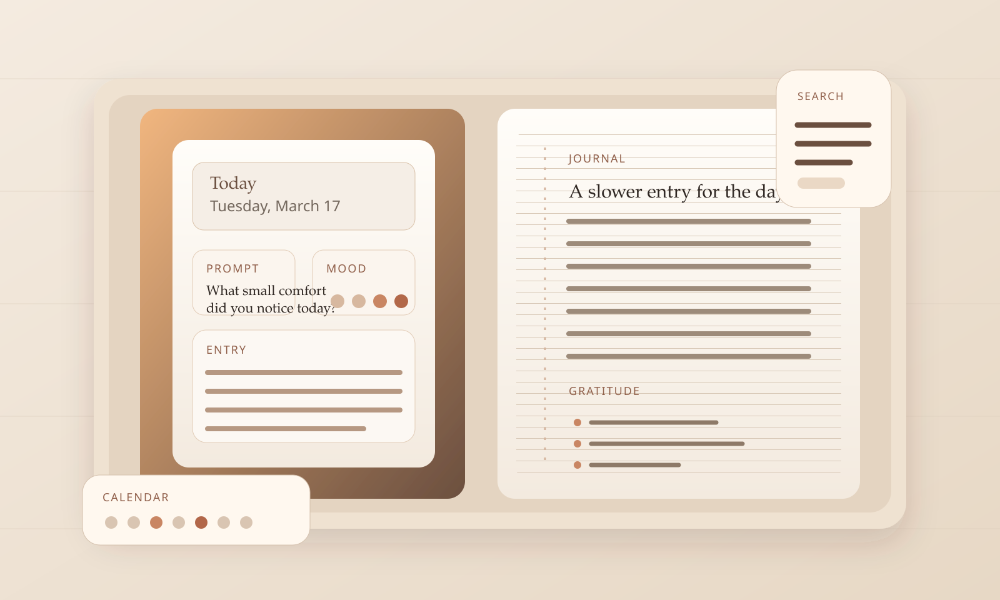

Today as a starting point
The writing flow begins on the current date with streak context, a quick mood selector, and a direct path into the entry editor.
Local-first guided journal
Daily Journal combines a dated notebook, rotating prompts, mood tracking, and JSON backup in a build that can live as a static site, install as a PWA, and travel into Capacitor wrappers for mobile testing.

The repo frames Daily Journal as a local-first journaling app. The center of gravity is the daily writing ritual: open the current date, pull a handful of prompts, choose a mood, write in markdown, and keep the archive easy to revisit later.
That tone matters. The product is not presented as social, collaborative, or cloud managed. It stays close to the device, keeps backup simple with JSON export, and treats search and calendar recall as part of the writing loop rather than separate admin screens.
The writing flow begins on the current date with streak context, a quick mood selector, and a direct path into the entry editor.
The library is curated rather than open-ended: gratitude, self-reflection, relationships, goals, anxiety and stress, creativity, travel, health, morning pages, and evening reflection.
Entries are indexed by date first, then made retrievable by free text, tag, mood range, and prompt category when the archive grows.
IndexedDB is the preferred store, localStorage is the fallback, and JSON export and import keep the archive portable without inventing accounts.
Start on today, or jump to another day from the month view when memory needs a place.
Draw one to three prompts, reroll when needed, and pin the prompts worth keeping in view.
Title, markdown body, mood, tags, and a three-part gratitude list turn the page into a structured record.
Search the archive later, filter by mood or prompt category, then export the record as JSON when it needs to move.
The public evidence supports a web-first journal that can install as a PWA and can also be wrapped for iOS and Android via Capacitor. There is no store listing in the repo, no cloud sync, and no accounts layer.
Counted directly from the bundled prompt file.
From gratitude and goals to morning pages and evening reflection.
IndexedDB is preferred, with localStorage fallback and JSON export.
Static web app, PWA install path, and Capacitor projects for iOS and Android.
Not by default. The repo describes local storage in IndexedDB, with localStorage as fallback, plus manual JSON export and import for backup.
No public store listing is evidenced in the repo. The repo does include Capacitor iOS and Android projects, so native packaging is part of the build path, but store availability is not claimed here.
The product leans on a prompt library, mood tracking, gratitude fields, and calendar recall so each entry begins with some structure instead of a bare text box.
Yes. JSON backup and restore are documented in the repo, and the current data model keeps entries keyed by date and id for safer merge behavior.
Final note
Daily Journal reads best as a personal practice tool: date first, prompt when needed, search later, back up when ready.